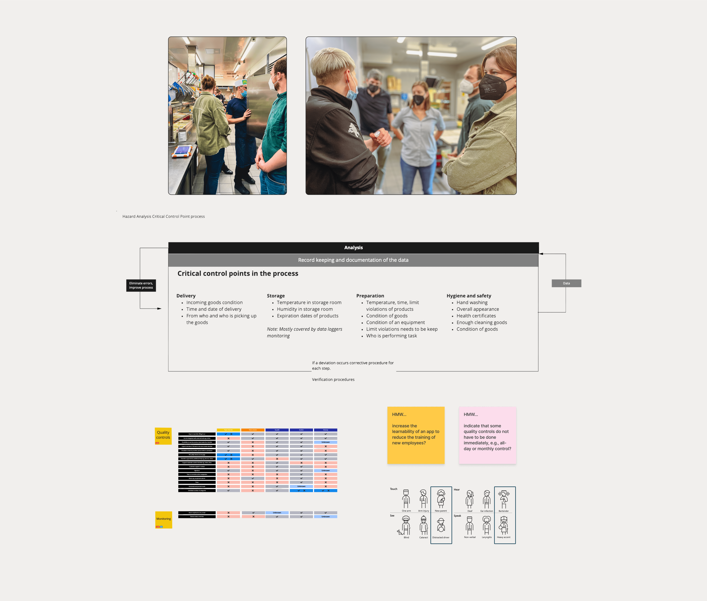
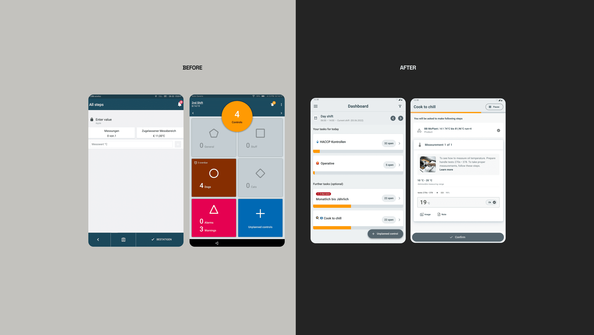
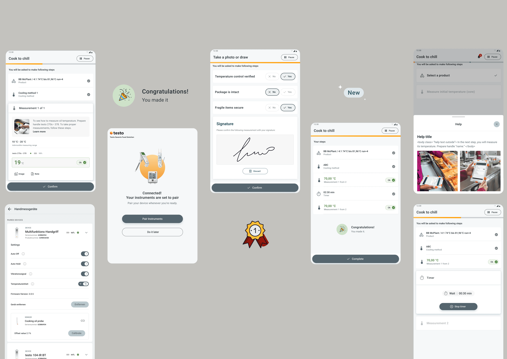

Food safety mobile app
Redesigned an application used across 45 countries—contributing to 2 new enterprise wins and 100% user retention during the transition.

Food Safety Control Unit is a comprehensive digital solution designed to centralize, automate, and simplify HACCP monitoring and quality management for big restaurant chains, petrol stations and store chains. Built for restaurant managers and quality control teams, it transforms paper-based processes into streamlined digital workflows, enabling real-time progress tracking, team oversight, and compliance reporting across multiple locations.
The Challenge
"How can we help restaurant chains maintain food safety standards efficiently while driving product adoption?"
User Problems:
- Long feedback loops between customers and development team
- Manual HACCP processes = lost time, compliance risks
- Data trapped on devices, not accessible for analysis
- No real-time monitoring of quality control progress
- Growing complexity: more locations, stricter regulations
Business Challenge:
- Internal assumption: "B2B customers hate change—they'll resist any redesign"
- Risk: Fear of losing major clients through interface updates
- Opportunity: Prove that thoughtful design drives adoption, not abandonment
Personas
Restaurant Employee
Quality Control Staff
- Needs simple, intuitive interface
- Frustrated by complex navigation
- Wants to spend less time on documentation, more time on actual quality control
Restaurant Manager
Operations Oversight
- Needs team-wide progress visibility
- Wants to monitor all loggers in one place
- Struggles with fragmented quality data across locations

Research & Insights
User Research:
- On-site Visits:
- "The back button problem isn't about the button—it's about complete overview."
- "We need to see our progress at a glance."
- Stakeholder Interviews:
- Restaurant chains (8 leading customers)
- 7000+ restaurants and petrol stations across 45 countries
- Pain Point Mapping:
- Navigation confusion = biggest barrier
- Three critical areas: Dashboard, Checklists, Monitoring
Business Insights:
- Key Discovery: Users actually wanted improvements—they were frustrated with current limitations
- Adoption Driver: Clear value demonstration through prototyping increased user buy-in
- Competitive Advantage: Better UX = stronger client retention and expansion opportunities
The Design Process

Discovery & Problem Definition
- Stakeholder Alignment: Eliminated assumptions through direct user contact
- Competitive Analysis: Studied similar solutions (smart home apps, to-do lists)
- "How Might We" Framework: Reframed design challenges around real problems
Ideation & Validation
- Crazy 8s Method: Rapid idea exploration
- Inverse Thinking: "The more we informed, the more we confused"—focused on essential features only
- Prototype Testing: Simple prototypes tested in real restaurant environments
Impact
- System Usability Scale (SUS) improved from C (OK) to A (Excellent)
- Reduced cognitive load through simplified navigation
- Faster quality control processes with digital checklists
- Better compliance tracking with real-time monitoring
User Feedback:
- "Finally, we can see our progress clearly."
- "The new dashboard makes quality control so much easier."
- "Navigation actually makes sense now."
Continuous Improvement
- Real-world Testing: On-site visits to restaurants during setup
- User-Centered Research: Direct contact with employees using the system
- Iterative Design: Multiple prototype versions tested in live environments
- Stakeholder Validation: Regular feedback loops with restaurant managers
- Design System: Comprehensive UI library with reusable components


Solution
Key Features
| Before (Fragmented) | After (Unified) |
|---|---|
| Only daily checklists | Setting recurring-time checklists |
| No progress overview | Real-time dashboard |
| Complex navigation | Streamlined interface |
| Manual monitoring | Automated tracking |
Annotations:
- Centralized Overview: All quality metrics in one place
- Real-Time Progress: See completion status instantly
- Simplified Interface: Reduced cognitive load
- Integrated Monitoring: Automated quality tracking
In Conclusion
Our biggest client—a global fast-food chain with 500+ locations—was worried about the redesign. Their teams use our tools every day across dozens of franchise locations, so any disruption to their workflows was a real concern.
I made sure they were part of the solution, not just on the receiving end of it. We tested prototypes together, listened to what wasn't working, and rolled out changes gradually so their teams could adapt comfortably.
What happened: They became our co-development partner. Now we meet quarterly to build new compliance features together—they help shape what we build next.
The impact:
For users:
- Took usability from a C to an A through real-world testing and iteration
- Validated every solution on-site with actual restaurant managers and quality teams
- Built a design system that works consistently across web and mobile
For the business:
- Kept our most important client happy and deepened the relationship
- Won 2 new enterprise clients who saw the redesign
- Zero customers left during the rollout (vs. 12% industry average when companies push big UI changes)
- Earned enough trust that stakeholders approved redesigns across Testo's entire product line
What it means: When you involve users early, design with them instead of at them, and take the time to get it right—good things happen. We didn't just ship a redesign. We proved that thoughtful design keeps customers, wins new ones, and changes how the whole company works.
Another restaurant chain case study: 31 locations, digital HACCP, 9.4M guests/year (Language: German)